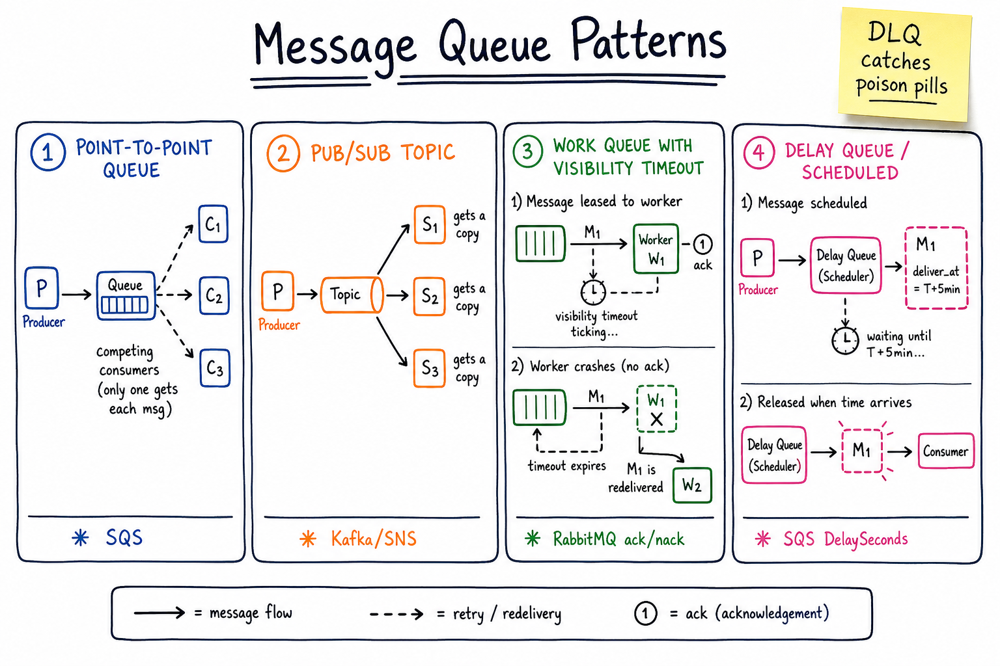

Message Queue Patterns // Concept
Decouple producer from consumer. Absorb bursts. Deliver asynchronously. The four patterns — P2P queue, pub/sub, work queue, delay queue — compose into every modern async system.

Four canonical patterns side by side: P2P queue with competing consumers, pub/sub topic with fan-out, work queue with visibility timeout and redelivery, delay queue with scheduled release.
01 — What Problem It Solves
SYNCHRONOUS:
Client —> ServiceA —> ServiceB —> ServiceC
Client waits for everything. If C is slow, A is slow, client is slow.
Any failure = full chain fails.
ASYNCHRONOUS via a queue:
Client —> ServiceA —> [queue] —> ServiceB (async)
→ ServiceC (async)
Decouples in time + load + identity.
Burst absorption: queue grows; consumers drain at their pace.
Failure isolation: B down, queue holds messages until B is up.
A queue trades immediate consistency for resilience + scalability + decoupling. The cost is "harder to reason about" — ordering, dedup, retries.
01a — Core Vocabulary
| Term | Meaning |
|---|---|
| Queue | One-to-one channel. Each message delivered to one consumer (competing-consumer pattern). |
| Topic | One-to-many channel. Each message delivered to all subscribers. |
| P2P (point-to-point) | Producer-to-queue-to-one-of-many-consumers. Work distribution. |
| Pub/Sub | Producer publishes to topic; all subscribers get a copy. Fan-out. |
| At-most-once | Fire-and-forget. May lose messages on failure. |
| At-least-once | Default for most brokers. Retry until ack → duplicates possible. |
| Exactly-once | The unicorn. Achievable as "exactly-once effect" via idempotency. |
| Visibility timeout / lease | Message hidden from other consumers while one is processing it (SQS, work queue). |
| FIFO | Ordered delivery (SQS FIFO, Kafka per-partition). |
| DLQ | Dead-letter queue. Failed-too-many-times messages parked here. |
| Fan-out | 1 in → N out. SNS → many SQS queues. Kafka consumer groups. |
| Fan-in | N in → 1 stream. Aggregation point. |
| Offset / cursor | Consumer's position in the log. Kafka-style log queues. |
02 — Approaches (Pattern Matrix)
| Pattern | Use case | Examples | Key knob |
|---|---|---|---|
| P2P queue / work queue | Distribute tasks to a pool of workers (competing consumers) | SQS, RabbitMQ work queues, Beanstalkd | Visibility timeout / ack |
| Pub/Sub topic | Fan-out events to many subscribers (notifications, audit log, analytics) | Kafka, SNS, Google Pub/Sub, NATS | Consumer groups / subscriptions |
| Priority queue | High-priority msgs jump the queue | RabbitMQ priorities, custom heap-backed | Priority levels |
| Delay queue / scheduled | Deliver at deliver_at, used for retries with backoff, scheduled jobs | SQS DelaySeconds, Beanstalkd, Redis ZSET-based | Delay until timestamp |
| Log / stream | Replayable history. Consumers own their offset. | Kafka, Kinesis, Pulsar, Redpanda | Retention + offset |
| RPC over queue | Request/reply with correlation ID + reply queue | RabbitMQ RPC pattern | Correlation ID |
| Routing / topic exchanges | Route by key pattern (e.g. orders.#.us-east) | RabbitMQ topic exchange | Routing key |
03 — Diagram
Main diagram above shows the four canonical patterns side-by-side. P2P competes; pub/sub broadcasts; work-queue leases with timeout; delay queue gates by time.
04 — Delivery Semantics
| Semantic | How | Trade-off |
|---|---|---|
| At-most-once | No retry. Producer doesn't wait for ack. Consumer can fail silently. | Loses messages on any failure. Fine for metrics, logs. |
| At-least-once | Producer retries until ack. Consumer acks after processing. Default for SQS / Kafka. | Duplicates on retry. Consumer must be idempotent. |
| Exactly-once effect | At-least-once + idempotent consumer (dedup store, idempotency key, transactional outbox). | Real-world target. See idempotency. |
| Exactly-once delivery | Impossible in async distributed systems (Two Generals Problem). | Kafka's "exactly-once" is producer→broker→consumer with transactional offsets — really exactly-once-effect. |
Production rule: assume at-least-once, design idempotent consumers.
05 — Ordering Guarantees
NO ORDERING (default for SQS standard, RabbitMQ classic): msg_A,B,C produced; consumers may see B,A,C. Cheapest, highest throughput. PER-PARTITION ORDERING (Kafka): Order preserved within a partition. Across partitions, no order. Producer routes by key: hash(key) % numPartitions. → same user_id always goes to same partition → per-user FIFO. GLOBAL ORDERING (rare): Single partition. Limits throughput to one consumer. Almost never used. FIFO QUEUE (SQS FIFO): Per <MessageGroupId> ordering, exactly-once dedup window (5 min). Lower throughput than standard (300 TPS soft cap).
In Kafka, choosing the partition key = choosing what is FIFO.user_id→ per-user FIFO.order_id→ per-order FIFO.
06 — DLQ & Replay
Message processed N times (e.g. 5), still fails → moved to DLQ. Why move? - Don't let one poison-pill message block the queue. - Don't infinite-loop a bug consuming CPU + budget. DLQ workflow: 1. Alarm on DLQ depth > 0 (paging metric). 2. Inspect: bad payload? bug? upstream change? 3. Fix code or fix data. 4. Replay: drain DLQ → main queue. 5. Track DLQ-driven-incidents as a quality metric.
For Kafka, DLQ is a separate topic (e.g. orders.dlq). The consumer publishes a fail-with-context envelope: original message + error + retry count.
07 — Backpressure (Consumer Can't Keep Up)
- Queue grows unbounded — alarm on queue depth / consumer lag.
- Scale consumers horizontally — if partitions allow (Kafka: more partitions = more consumers).
- Shed load at producer — reject low-priority writes, return 429.
- Drop / sample at producer — for metrics, logs, click streams. See backpressure & rate limiting.
- Tier the queue — high/low priority topics; high gets dedicated capacity.
- Buffer + spill to disk — Kafka does this natively (log on disk).
08 — Dedup & Exactly-Once Effect
RECIPE for exactly-once-effect:
1. Producer attaches a unique message_id (UUID or content hash).
2. Consumer maintains a dedup store: Redis SET msg:<id> with TTL.
3. On receive:
SET key NX EX 86400 // SETNX with 24h TTL
if already exists -> drop, ack
else -> process, then ack
4. The processing itself must be idempotent (UPSERT, CAS).
KAFKA TRANSACTIONAL PRODUCER:
Produce-and-commit-offset in one txn. Consumer reads in
read_committed mode. Gives exactly-once across Kafka.
Does NOT extend to external sinks unless those sinks
participate via outbox pattern.
See Kafka deep dive for transactions and idempotent producer.
09 — Broker vs Brokerless & Other Choices
| Choice | Pros | Cons | When |
|---|---|---|---|
| Kafka | High throughput, replay, log retention | Ops complexity, partition tuning | Event-driven, data pipelines, audit trails |
| SQS | Fully managed, dead simple, autoscale | No replay, opaque ordering (standard) | AWS-native work queues |
| RabbitMQ | Flexible routing, priorities, RPC | Lower throughput than Kafka, harder HA | Complex routing, RPC patterns |
| NATS / NATS JetStream | Brokerless or lightweight broker, sub-ms latency | Smaller ecosystem | Microservice mesh, IoT, low-latency RPC |
| Redis Streams | Embedded if already running Redis | Smaller, no multi-region replication | Small-to-medium event log, in-process queues |
| Google Pub/Sub | GCP-managed, global, push or pull | GCP lock-in | GCP-native fan-out |
N-2 — Where It Shows Up
- Distributed message queue — parent A-sheet, design-your-own-Kafka.
- Job scheduler — delay queue + work queue pattern.
- Notification system — SNS fan-out → per-channel SQS queues.
- Payment system — saga events on Kafka, DLQ for stuck payments.
- Uber — trip-event stream on Kafka.
- Ad click aggregator — Kafka ingest + per-partition aggregation.
- Kafka deep dive
- Idempotency — required for at-least-once consumers.
- Backpressure — what to do when consumers can't keep up.
N-1 — Common Interview Probes
- "At-least-once or at-most-once?" → almost always at-least-once + idempotent consumer.
- "How do you guarantee order?" → partition by the entity you want ordered.
- "What happens to a poison pill?" → DLQ after N retries.
- "How do you replay events?" → Kafka-style log + offset reset.
- "Pub/sub or queue?" → do many subscribers need the message? Then pub/sub.
- "How does the consumer scale?" → partitions = max parallelism.
- "What if the broker is down?" → producer buffers in memory (bounded), then either drops, blocks, or fails the upstream call.
N — Interview Q&A
What's the difference between Kafka and SQS?
Kafka = ordered log on disk with consumer offsets; replayable; per-partition ordering; high throughput; ops-heavy. SQS = fully managed work queue, no replay (msg deleted on ack), no real ordering on standard, autoscaling. Kafka for event streaming + replay; SQS for "decouple my workers".
Can you really do exactly-once delivery?
Not delivery — that's impossible (Two Generals). You can do exactly-once effect: at-least-once delivery + idempotent consumer + dedup store. Kafka transactions give exactly-once within Kafka (read → process → write to Kafka) but cross-system requires outbox/idempotency keys.
How do you preserve ordering when scaling consumers?
Partition by the entity that needs ordering. user_id → one user always goes to one partition → one consumer instance handles it FIFO. Across users, no order. This is the standard Kafka pattern.
What's a visibility timeout and why does it matter?
When a consumer picks a message it's hidden from others for X seconds. If the consumer acks within X, message is deleted. If consumer crashes, after X it reappears. Set X = ~2x p99 processing time. Too short = duplicate processing. Too long = slow failure recovery.
Poison pill — what is it and what do you do?
A message that always fails to parse / process (bad schema, corrupt payload). Without protection it loops forever. Mitigation: max retry count (e.g. 5) → move to DLQ → alert. Never just keep retrying.
How does Kafka achieve such high throughput?
Append-only log on disk + sequential I/O + page cache + batched compression + zero-copy sendfile + per-partition single-writer model. Network and disk both go sequentially.
SNS → SQS fan-out, when?
One event has N downstream consumers each at different SLAs. SNS publishes to N subscribed SQS queues. Each consumer drains its queue at its pace; one slow consumer doesn't block others. Common AWS pattern.
How do you implement a delay queue without SQS?
Redis ZSET keyed by deliver_at timestamp. A worker polls ZRANGEBYSCORE 0 now LIMIT 0 100, atomically moves them to a ready queue. Used by Sidekiq, Celery, and many in-house schedulers (see job scheduler).
Producer's local broker is down. What happens?
Bounded in-memory buffer (Kafka producer's buffer.memory). When full: either block the producer (slows the upstream API), drop with metric, or fail the upstream call with 503. The choice is a business decision. Never silently keep growing.
Consumer lag spikes. How do you respond?
(1) Add consumer instances (only helps if you have spare partitions). (2) Add partitions for future scale. (3) Profile the consumer — usually a slow downstream call. (4) Batch the consumer's writes. (5) Temporarily shed load at the producer. (6) Tier topics by priority.
Outbox pattern — why?
You want to "atomically" write to DB and publish an event. Without outbox: DB write succeeds, broker call fails → lost event. With outbox: write an outbox row in the same DB txn; a publisher tails the table and publishes; safely retries because the source of truth is the DB. Used by Debezium, Eventuate.
SDE-2 vs SDE-3 differentiator?
| SDE-2 | SDE-3 |
|---|---|
| "We'll put it on a queue", names Kafka, knows pub/sub vs queue | Picks the right pattern; reasons about partition key, ordering scope, DLQ alarms, idempotency contract, outbox vs CDC, broker capacity tuning (replication factor, ISR), exactly-once vs effect, multi-region replication (MirrorMaker, Confluent Replicator) |